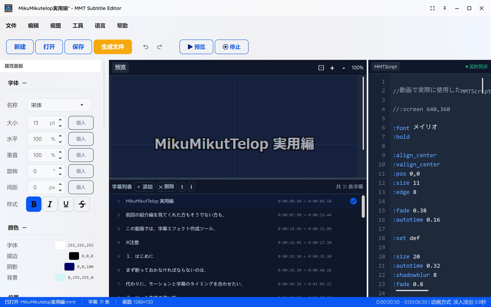
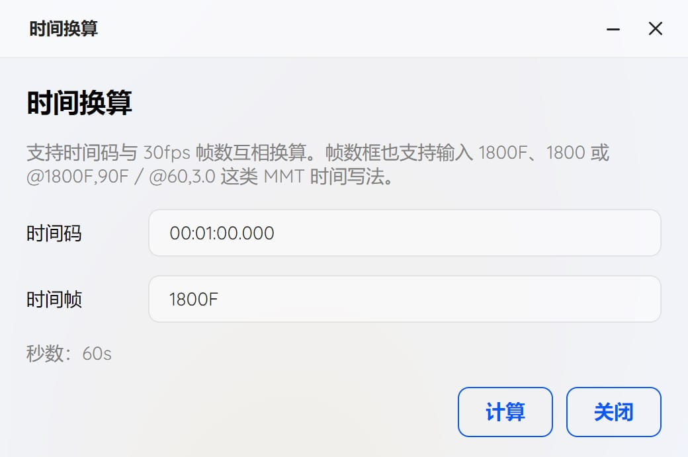
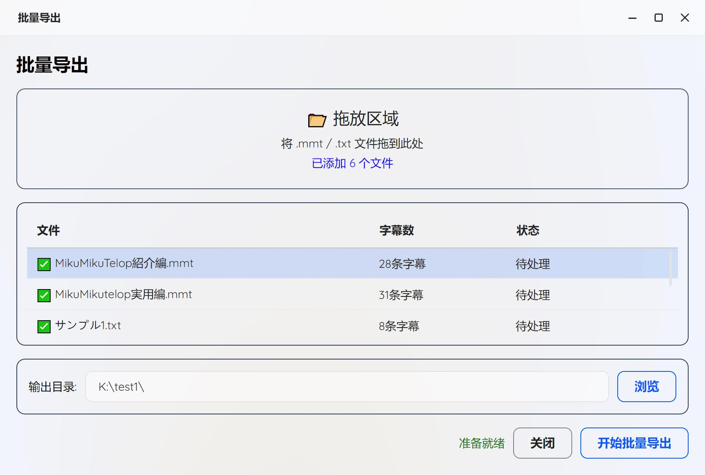
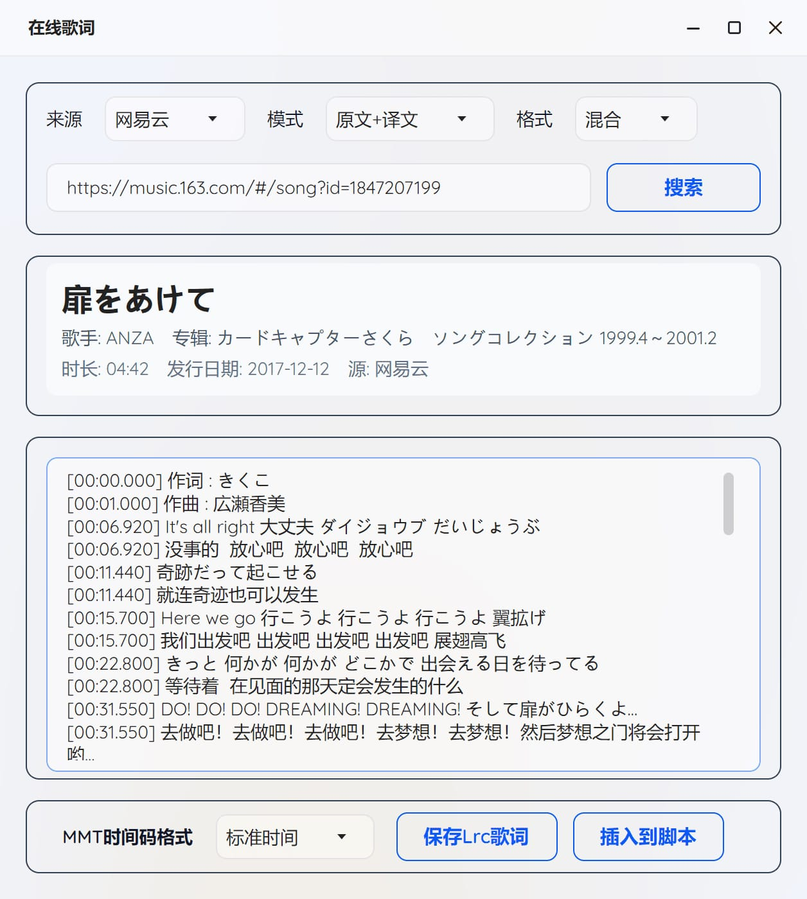
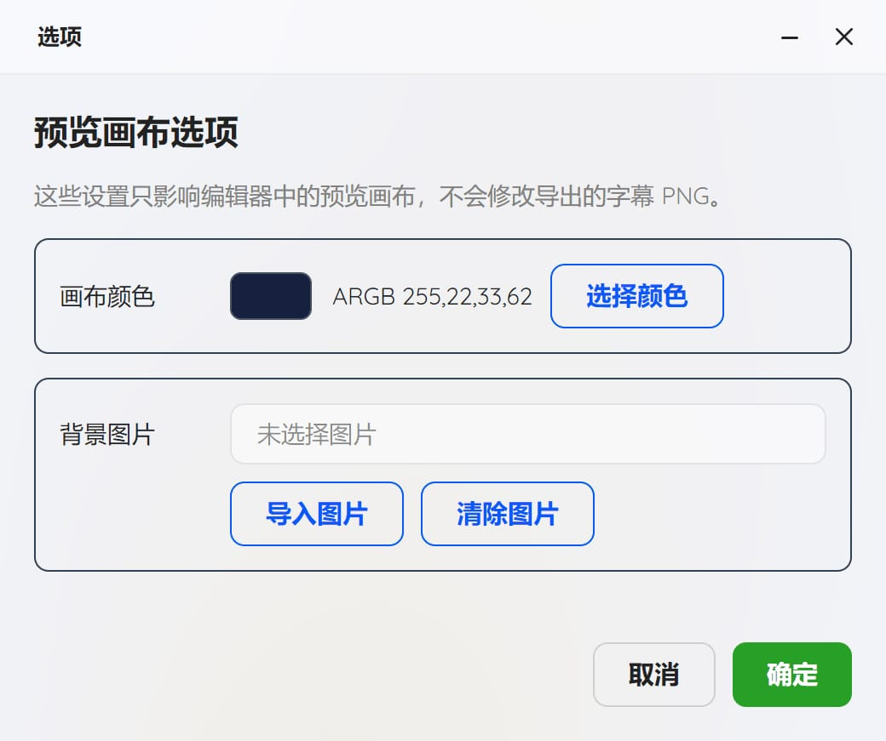

語言：English | 简体中文 | 繁體中文 | 日本語
基於 そぼろ 作者 MikuMikuTelop 工具修改，MMT Subtitle Editor 是一個用於編輯、預覽和匯出MMD專用的MMTScript字幕腳本圖形化工具。方便編輯創建字幕，實現簡單化操作，參數可視化，歌詞搜尋下載、批量匯出等。
MMT Subtitle Editor.exe 程式即可。.txt/.mmt 腳本檔案MikuMikuTelop.x、MikuMikuTelop.fx、PostTelop.x、PostTelop.fx四個檔案和圖片序列。MikuMikuTelop.x 到 MikuMikudance 進行播放！附件順序需要放置到附件最底部。需要有音頻或幀數才能播放。
這是用於時間碼與 30fps 幀數互相換算。比如在時間輸入00:01:00.000，幀數框會顯示1800F。很方便計算字幕時長。

這是用於批量將 .txt/.mmt 檔案匯出，將會匯出對應的同名資料夾，每個資料夾內有圖片序列和.x/.fx檔案。
直接拖動檔案到拖放區域即可。

這是用於從網易雲音樂、QQ音樂搜尋並匯入歌詞。
首先選擇來源、模式、格式後，輸入連結、歌曲ID，點擊搜尋按鈕，將會讀取到歌詞，有些歌曲會提示可能沒有歌詞。
輸入關鍵字後，點擊搜尋按鈕，將會彈出搜尋結果，選擇對應的歌曲後點擊「確定」按鈕即可將歌詞匯入到歌詞面板中。
MMT時間碼格式可以選擇「時間碼」或「秒數」。
「儲存Lrc歌詞」按鈕可以將當前歌詞儲存為 .LRC 檔案。
「插入到腳本」按鈕可以將當前歌詞插入到腳本編輯器中。
歌曲連結/歌曲ID範例：
網易雲範例連結：https://music.163.com/#/song?id=1847207199
網易雲歌曲ID：1847207199
QQ音樂範例連結：https://y.qq.com/n/ryqq/songDetail/000sjEUD2wMqNt
QQ音樂歌曲ID：000sjEUD2wMqNt

這是用於設定預覽畫布選項。
可以設定畫布顏色或背景圖片。
MMTScript 是為 MMD & MME 字幕特效生成工具「MikuMikuTelop」設計的簡易字幕描述語言。
| 格式 | 說明 |
|---|---|
@3,5 |
從3秒開始顯示5秒 |
@100F,10 |
從100幀開始顯示10秒 |
@10 |
從10秒開始，時長自動計算 |
@+2,5 |
在前一個字幕後2秒開始 |
@*0,5 |
與前一個字幕同時開始 |
@32~36 |
從32秒顯示到36秒 |
@00:00:10.000 - 00:00:12.000 |
指定時間範圍。*新增功能 |
| 命令 | 參數 | 說明 |
|---|---|---|
:font |
字體名 | 指定字體名稱 |
:size |
數值 | 字體大小（相對於螢幕高度一半的百分比） |
:fontcolor |
R,G,B | 字體顏色（0-255） |
:bold |
- | 開啟粗體 |
:bold_off |
- | 關閉粗體 |
:italic |
- | 開啟斜體 |
:italic_off |
- | 關閉斜體 |
:underline |
- | 開啟底線 |
:underline_off |
- | 關閉底線 |
:strikeout |
- | 開啟刪除線 |
:strikeout_off |
- | 關閉刪除線 |
| 命令 | 參數 | 說明 |
|---|---|---|
:pos |
X,Y | 水平和垂直位置（-100到100） |
:pos_x |
X | 僅水平位置 |
:pos_y |
Y | 僅垂直位置 |
:pos_nextline |
- | 移動到下一行 |
:pos_next |
- | 移動到延續位置 |
:align_left |
- | 靠左對齊 |
:align_center |
- | 置中對齊 |
:align_right |
- | 靠右對齊 |
:valign_top |
- | 頂部對齊 |
:valign_center |
- | 垂直置中 |
:valign_bottom |
- | 底部對齊 |
| 命令 | 參數 | 說明 |
|---|---|---|
:edge |
粗細 | 描邊粗細 |
:edgecolor |
R,G,B | 描邊顏色 |
:edge2 |
粗細 | 第二層描邊粗細 *新增功能 |
:edgecolor2 |
R,G,B | 第二層描邊顏色 *新增功能 |
:edge3 |
粗細 | 第三層描邊粗細 *新增功能 |
:edgecolor3 |
R,G,B | 第三層描邊顏色 *新增功能 |
:edge4 |
粗細 | 第四層描邊粗細 *新增功能 |
:edgecolor4 |
R,G,B | 第四層描邊顏色 *新增功能 |
:edge_round |
- | 圓角描邊 |
:edge_round_off |
- | 關閉圓角描邊 |
:shadow |
距離 | 陰影距離 |
:shadowcolor |
R,G,B | 陰影顏色 |
:shadowblur |
數值 | 陰影模糊半徑 |
:glow |
數值 | 外發光半徑 *新增功能 |
:glowcolor |
R,G,B | 外發光顏色 *新增功能 |
:glowalpha |
0-1 | 外發光不透明度 *新增功能 |
:edgegradient_on |
- | 開啟描邊漸變 *新增功能 |
:edgegradient_off |
- | 關閉描邊漸變 *新增功能 |
:edgegradient |
R,G,B | 描邊漸變顏色 *新增功能 |
:textgradient_on |
- | 開啟文字漸變 *新增功能 |
:textgradient_off |
- | 關閉文字漸變 *新增功能 |
:textgradient |
R,G,B | 文字漸變顏色 *新增功能 |
:textgradientdir |
vertical/horizontal | 文字漸變方向，水平和垂直 *新增功能 |
| 命令 | 參數 | 說明 |
|---|---|---|
:screen |
寬,高 | 畫面尺寸 |
:screen_height |
高度 | 畫面高度 |
:margin |
X,Y | 邊距（相對於字體大小的百分比） |
:backcolor |
R,G,B,A | 背景顏色 |
| 命令 | 參數 | 說明 |
|---|---|---|
:alpha |
透明度 | 不透明度（0-1.0） |
:fade |
時間 | 淡入淡出時間（秒） |
:autotime |
時間 | 每字符自動時長（秒） |
:timebase |
時間 | 時間基準 |
| 命令 | 參數 | 說明 |
|---|---|---|
:scalex |
比例 | 水平縮放 *新增功能 |
:scaley |
比例 | 垂直縮放 *新增功能 |
:rotate |
角度 | 旋轉角度 *新增功能 |
:spacing |
間距 | 字符間距 *新增功能 |
:pos_z |
深度 | Z軸位置 *新增功能 |
以下功能是新增的，可以通過這些命令為字幕添加各種動畫效果：
| 命令 | 參數 | 說明 |
|---|---|---|
:anim fade |
類型 | 動畫類型-淡入淡出 *新增功能 |
:anim random_blur |
類型 | 動畫類型-隨機模糊 *新增功能 |
:anim slide_up |
類型 | 動畫類型-上滑進入 *新增功能 |
:anim scale_pop |
類型 | 動畫類型-縮放彈出 *新增功能 |
:anim wipe |
類型 | 動畫類型-擦除 *新增功能 |
:anim blinds |
類型 | 動畫類型-百葉窗 *新增功能 |
:animtime |
時間 | 動畫時間（秒）*新增功能 |
:animdir |
方向 | 擦除方向（ltr/rtl）*新增功能 |
:animblinds |
數量 | 百葉窗條數 *新增功能 |
:animblur |
強度 | 模糊強度 *新增功能 |
| 命令 | 參數 | 說明 |
|---|---|---|
:tate |
- | 豎排文字 |
:tate_off |
- | 關閉豎排 |
:billboard |
- | 公告牌模式 |
:billboard_off |
- | 關閉公告牌 |
:set |
名稱 | 儲存當前格式為預設 |
:get |
名稱 | 調用儲存的格式（default 重置所有） |
:skip |
- | 跳過下一個文本命令 |
:end |
- | 腳本結束標記 |
:imagepath |
path/to/image.png | 圖片路徑 *新增功能 |
:imagescale |
150,150 | 圖片縮放比例 *新增功能 |
:imagepos |
0,0,0 | 圖片位置 *新增功能 |
:imagerotation |
數值 | 圖片旋轉角度 *新增功能 |
:imagealpha |
0-1 | 圖片透明度 *新增功能 |
| 快捷鍵 | 功能 |
|---|---|
| Ctrl+N | 新建檔案 |
| Ctrl+O | 開啟檔案 |
| Ctrl+S | 儲存檔案 |
| Ctrl+Shift+S | 另存為 |
| F5 | 刷新預覽 |
| Ctrl+E | 匯出 PNG |
| Ctrl+P | 預設管理 |
本專案基於 MIT 許可證開源。